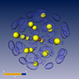
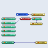

In case of time-dependent data often each time-step is stores in a separate file. In Amira such time series can be easily imported using the Load Time Series... option of the file menu (see Section 3.1.1.2). This option creates a time series control module, which provides a time slider and actually loads and caches the desired time steps. The first two demos in this section illustrate the use of this module. In the first case the slices of a 3D image stack are interpreted as separate time steps. In the second case six frames of a 3D dynamic quantum mechanical simulation of a proton's wave function in an argon cluster are shown.
The third demo illustrates how complex operations can be performed using script objects. In this case a script object is used to interpolate linearly between the individual frames of the argon cluster data set.
3D image stack interpreted as time series
 Argon cluster (dynamic quantum mechanical simulation)
 Argon cluster interpolated via a script-object